ST185 fuse + relay boxes - CAD rev 6
Claude Code, 2026-10-14. Rev 6 is rev 5 plus your answers to the last parts questions (DECISIONS R85): C1 M6 limiters, C3 mount hardware out of scope, C4 mini-fuse input jumpers (option C), B5 one 40 mm standoff. Everything else from rev 5 is kept: vents, rugged covers, angular legs, belly pans, open bottoms, snap-on covers, bend radius on every cable, AMI studs, tinned copper stock (R73, R75, R76, R79, R81, S27). Fusion: the same document, renamed ST185_fusebox_rev6 (no new document, R74). Model files (STEP / STL / f3d) are local, untracked, in cad/fusebox/ of the main checkout. Build: cad/fusebox/src/.


Rev 6 - your parts answers
- C1 = A: M6 compression limiters at all 10 mount points. EFC 10S00056 (M6, OD 9.8, ID 6.8, L 6, zinc-plated steel) in the 4 POWER feet, the 4 LOGIC feet and the 2 battery-block end tabs (each 6 mm thick); the foot pockets are now 10.2 press fit and the socket clearance above each foot 17 mm for an M6 head. The HCR150 flange bosses take the short one, EFC 10S00052 (L 4). Rev 5 listed the L 4 part for the end tabs too - wrong for a 6 mm tab, fixed.
- C3: the boxes only. The mount bolts, washers and nuts are gone from all three parts lists (the limiters stay - they are part of the box).
- C4 = C: mini fuses stay; each fuse input gets a short 14 AWG jumper. TE 880398-2 receptacle in the input cavity, TE PIDG 53941-1 ring lug (#8 / M4) on the other end, bolted with an M4 x 8 + spring washer into its tapped copper strip. To keep every jumper straight (no bend) the two strips stand on edge (1" x 1/8" tinned bar, 25.4 x 3.2) right under each column's input blades: Bus 1 now takes its input on the +x blade, Bus 2 on the -x blade, so both strips sit between the fuse columns, back to back either side of a printed spine (lips under both strips; holes let the bolt tips through). The lugs alternate between two rows 7.5 mm apart, so ring to ring is 3.0 mm (your rule); an insulated jumper barrel passes the next ring at 1.9 mm (same bus). 19 jumpers, 22 studs (spares tapped, no bolt). The feeds bolt straight onto the strips (Bus 1 out the front, Bus 2 out the rear), so the LOGIC box has no standoffs any more. The micro relay columns moved 4.5-5 mm outboard; the footprint stays 79 x 181, but the deck is 18.5 mm higher (the jumper lugs sit above the harness bundles): LOGIC is now 89.9 tall.
- B5: one 40 mm standoff. The POWER OUT row is now on the same 40 mm standoff as the IN row (Essentra 301540040050, 14 pieces): the OUT lugs sit at 9.5 mm, like the relay feeds, and their cables leave under the skirt through the belly pan wall (the pan notch round the JB1 lug tongue leaves 0.6 mm to the nearest live part).
- Row 110 follow-ups: receptacles by wire gauge from the CabinPower drawing (1241388-2 x 11, 880398-2 x 12 + 19 jumpers in LOGIC; ACPS in 880398-2, out 1241388-2; heater 87a on a 42281-1, so the 62998-2 is 2); DM 20 A is 14 AWG in the CAD too; Bus 2 positions 12 / 13 (MRS, B30) have their own inputs (no jumper). The PDB lugs (TE 132066-2 / 320575) and the heater 87 splice (TE 320238) are harness parts, not box parts.
Lids, top view
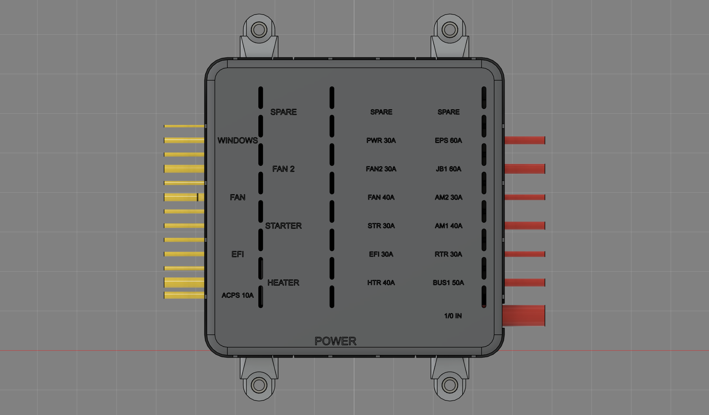
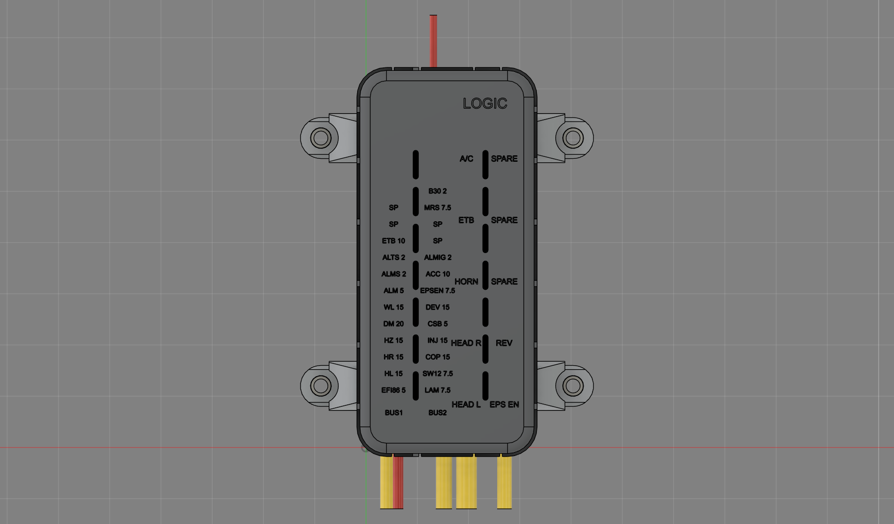
Labels (etched in the covers)
Logic: HEAD L, HEAD R, HORN, ETB, A/C, EPS EN, REV, SPARE, SPARE, SPARE, EFI86 5, HL 15, HR 15, HZ 15, DM 20, WL 15, ALM 5, ALMS 2, ALTS 2, ETB 10, SP, SP, LAM 7.5, SW12 7.5, COP 15, INJ 15, CSB 5, DEV 15, EPSEN 7.5, ACC 10, ALMIG 2, SP, SP, MRS 7.5, B30 2, BUS1, BUS2, LOGIC
Power: HEATER, EFI, STARTER, FAN, FAN 2, WINDOWS, SPARE, ACPS 10A, HTR 40A, EFI 30A, STR 30A, FAN 40A, FAN2 30A, PWR 30A, SPARE, BUS1 50A, RTR 30A, AM1 40A, AM2 30A, JB1 60A, EPS 60A, SPARE, 1/0 IN, POWER
BattRelay: BATT +, FP 40A, K_FP FUEL PUMP, 3, 5, PUMP, COIL
Cable routing
Yellow = harness wires (each terminal's own wire) and the LOGIC input jumpers, red = heavy cables. Gauges here follow the fuse rating (2-5 A 20 AWG, 7.5-10 A 18, 15 A 16, 20 A 14; relay 87 = its feed; coils 20; jumpers 14) - the harness drawings set the real gauge. Every bundle runs where no other cable runs and leaves at one edge. Bundle size = 1.2 x the root of the summed squared ODs.
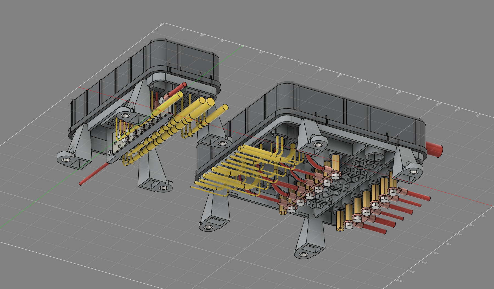
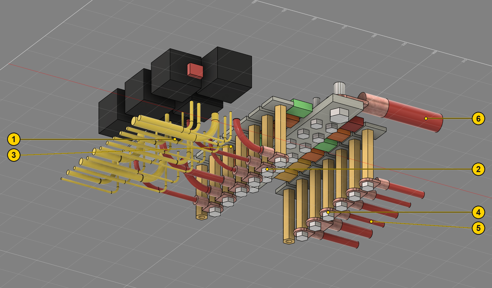
- harness bundles to the inboard edge
- relay feed: lug on the 40 mm standoff
- feed bends up R16 into terminal 30
- OUT lug on the 40 mm standoff
- OUT cables straight out the end
- 1/0 battery feed in
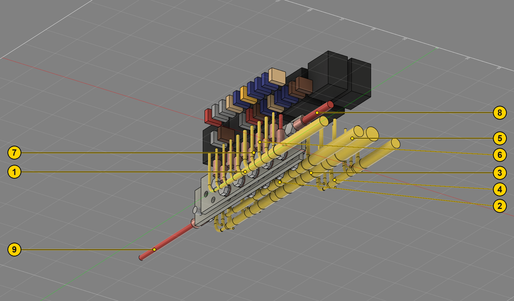
- Bus 1 fuse wires
- Bus 2 fuse wires
- micro relay wires, inboard column
- micro relay wires, outboard column
- all leave the front edge
- fuse input jumpers drop straight into their lugs
- bus strips on edge, printed spine between
- Bus 1 feed in at the front
- Bus 2 feed in at the rear
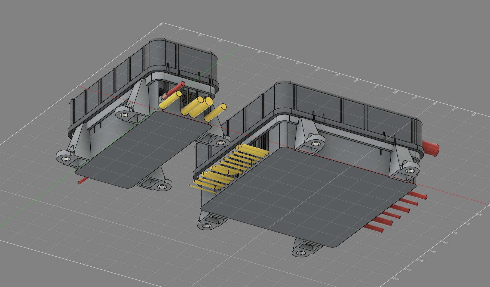
POWER bundles (leave the inboard end, at y)
| At | Wires | Bundle mm | Spare room under the deck mm | Which |
|---|---|---|---|---|
| 35 | 3 | 4.5 | 16.5 | heater 85, ACPS, ACPS |
| 43 | 2 | 6.5 | 6.0 | heater 87, heater 87a |
| 52 | 2 | 2.7 | 20.4 | heater 86, k_efi 85 |
| 61 | 1 | 3.0 | 15.3 | k_efi 87 |
| 70 | 2 | 2.7 | 20.4 | k_efi 86, k_str 85 |
| 79 | 1 | 3.0 | 15.3 | k_str 87 |
| 88 | 2 | 2.7 | 20.4 | k_str 86, k_fan 85 |
| 97 | 1 | 5.1 | 6.7 | k_fan 87 |
| 106 | 2 | 2.7 | 20.4 | k_fan 86, k_fan2 85 |
| 115 | 1 | 5.1 | 6.7 | k_fan2 87 |
| 124 | 2 | 2.7 | 20.4 | k_fan2 86, power 85 |
| 133 | 1 | 3.6 | 12.8 | power 87 |
| 142 | 1 | 1.6 | 20.9 | power 86 |
LOGIC bundles (leave the front edge, at x)
| At | Wires | Bundle mm | Spare room under the deck mm | Which |
|---|---|---|---|---|
| 10 | 10 | 7.2 | 21.7 | EFI86, HL, HR, HZ, DM, WL, ALM, ALMS, ALTS, ETB |
| 38 | 13 | 7.9 | 22.5 | LAM, SW12, COP, INJ, CSB, DEV, EPSEN, ACC, ALMIG, MRS, MRS in, B30, B30 in |
| 49 | 21 | 10.1 | 21.4 | HEAD LH 30, HEAD LH 87, HEAD LH 85, HEAD LH 86, HEAD RH 30, HEAD RH 87, HEAD RH 85, HEAD RH 86, horn 30, horn 87, horn 85, horn 86, k_etb 30, k_etb 87, k_etb 85, k_etb 86, k_acc 30, k_acc 87, k_acc 87a, k_acc 85, k_acc 86 |
| 68 | 10 | 7.1 | 22.9 | k_eps_en 30, k_eps_en 87, k_eps_en 87a, k_eps_en 85, k_eps_en 86, k_rev 30, k_rev 87, k_rev 87a, k_rev 85, k_rev 86 |
How it goes together
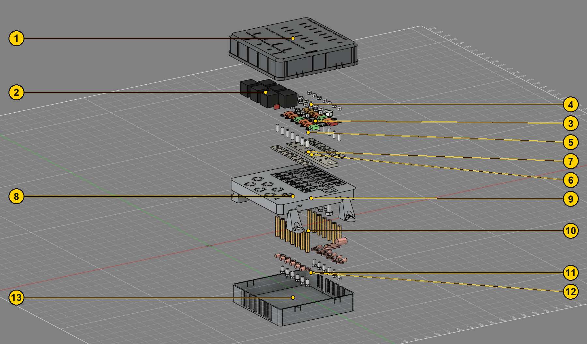
- cover (snaps on, 4 tongues)
- relays plug in from the top
- AMI fuses on the studs
- Keps nuts, 4 Nm max
- M5 set screws (studs)
- copper bar 25 x 6.35
- output pads 15 x 3
- base (deck on 4 angular legs)
- bar bolts up from below
- standoffs 40 mm (both rows, one part)
- cable lugs
- M5 x 10 lug bolts
- belly pan (snaps on)
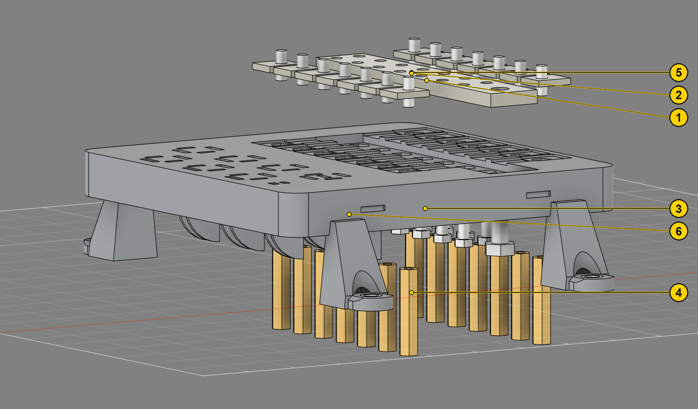
- lay the bar in its pocket
- lay the 14 pads in theirs
- bar bolts up through the hex head pockets
- 40 mm standoffs up into the hex holes, both rows
- set screw down through each pad into its standoff
- base, right way up
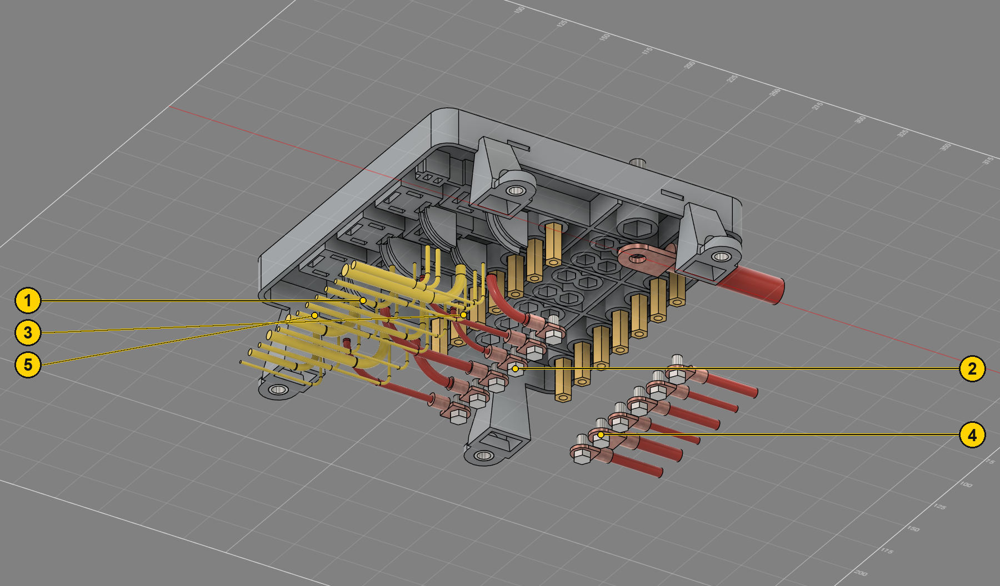
- crimp, push each terminal up into its cavity (wire side)
- relay feed lug on its long standoff (M5 x 10)
- feed round its saddle into terminal 30
- OUT lug on its standoff (M5 x 10)
- tie the bundles; they leave the inboard end
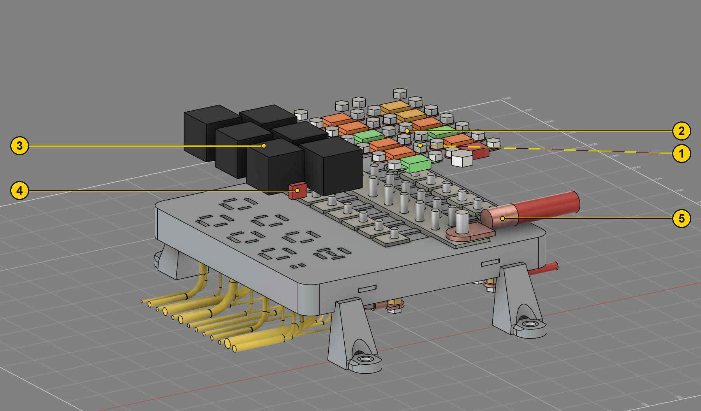
- AMI fuses on the studs
- Keps nuts, 4 Nm max
- relays plug in
- ACPS mini fuse
- 1/0 lug on the M8 stud
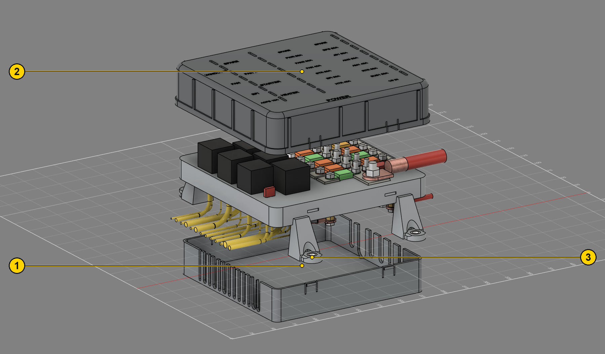
- belly pan snaps up into the skirt
- cover snaps down over the deck
- M6 through each foot (4), steel limiter
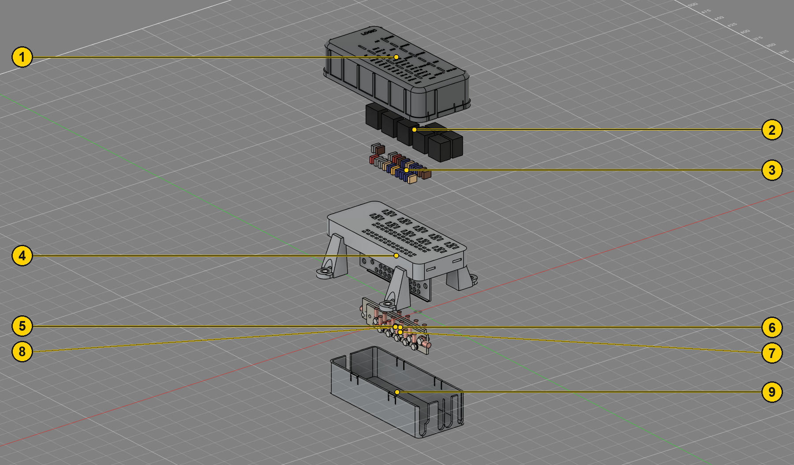
- cover (snaps on)
- micro relays
- mini fuses
- base: deck, cavity towers, spine between the strips
- Bus 1 / Bus 2 strips on edge, slide in from the rear
- input jumper lugs, TE PIDG 53941-1
- M4 x 8 + spring washer into the tapped strip
- feed lugs, M5 x 10 into the strip
- belly pan (snaps on)
POWER box (3 printed pieces)
- Press an M6 limiter into each of the 4 feet.
- Base right way up: lay the bar and the 14 pads in their pockets. From below, push the M5 x 16 bolts (and the M8 x 25 for the 1/0) up through the hex head pockets and the bar holes. Slide a 40 mm standoff up each hex hole (both rows) and screw a set screw down through each pad into it.
- Turn the base over. Crimp the relay terminals, push each one up into its cavity until it clicks, and tie the wires into their bundles (they leave the inboard end). Bolt the AMI output lugs under their standoffs (M5 x 10, both rows); each relay feed goes lug -> straight -> round its saddle -> terminal 30; the OUT cables run straight out under the skirt.
- Right way up: AMI fuses on the studs, Keps nuts 4 Nm max; 1/0 lug on the M8.
- Mount the base by its 4 feet, snap the belly pan up into the skirt, plug the relays and the ACPS fuse in, snap the cover on.
LOGIC box (3 printed pieces)
- Limiters in the feet. Make the 19 jumpers: 14 AWG, about 60 mm, a 880398-2 receptacle on one end, a PIDG 53941-1 ring lug on the other.
- Wire side up: push each jumper receptacle up into its fuse input cavity, and the output / micro-relay terminals into theirs; tie each column's wires into its bundle (front edge).
- Slide the two strips (on edge, lug face toward their jumpers) in from the rear along the spine lips. Bolt each jumper lug to its stud (M4 x 8 + spring washer) and each feed lug to its strip (M5 x 10).
- Mount by the 4 feet (long sides), snap the pan on, fuses and micro relays in, snap the cover on.
Battery block (2 printed pieces)
- From below, an M6 nut into each of the 2 hex pockets under the relay platform; M6 limiters in the end tabs (L 6) and the 2 flange bosses (L 4).
- Drop the 3 bolt heads into the fuse pedestal pockets (top), lay the bar and the pad on.
- HCR150 on its platform, 2 M6 bolts down through the flange into the captured nuts.
- AMI 40 on, jumper (two lugs, one straight 18 mm cable) from the AMI out to terminal 3, pump cable on terminal 5, coil plug on.
- Mount by the 2 end tabs (passenger side of the trunk, between the rear wall and the battery - Z4), snap the cover on.
To service a terminal later: unsnap the pan - every cavity is right there.
Bend radius check (every cable at every lug, stud and terminal)
Rule: FAA AC 43.13-1B CHG 1, par. 11-96 aa (p. 11-44/45) - a bundle no tighter than 10 x the OD of its largest wire; where a wire breaks out at a terminal and is suitably supported, 3 x OD. No cable maker publishes a bend radius for M22759/16 Tefzel or for SGX battery cable (checked: Thermax / ProWire M22759/16 sheet, Southwire SPEC 50050, AWC, Prestolite), so this installation rule is used. OD = maximum from the Thermax M22759/16 sheet; 1/0 SGX 13.6 mm.
| Cable | AWG | OD mm | Path in the box | Inside R mm | Needed | Note | |
|---|---|---|---|---|---|---|---|
| LOGIC BUS1 EFI86 input jumper (14 AWG) | 14 | 2.41 | straight down from the input receptacle into its PIDG lug barrel (11.9 mm of wire between them) | no bend | - | OK | no bend: the lug barrel is right under the input blade |
| LOGIC BUS1 HL input jumper (14 AWG) | 14 | 2.41 | straight down from the input receptacle into its PIDG lug barrel (4.4 mm of wire between them) | no bend | - | OK | no bend: the lug barrel is right under the input blade |
| LOGIC BUS1 HR input jumper (14 AWG) | 14 | 2.41 | straight down from the input receptacle into its PIDG lug barrel (11.9 mm of wire between them) | no bend | - | OK | no bend: the lug barrel is right under the input blade |
| LOGIC BUS1 HZ input jumper (14 AWG) | 14 | 2.41 | straight down from the input receptacle into its PIDG lug barrel (4.4 mm of wire between them) | no bend | - | OK | no bend: the lug barrel is right under the input blade |
| LOGIC BUS1 DM input jumper (14 AWG) | 14 | 2.41 | straight down from the input receptacle into its PIDG lug barrel (11.9 mm of wire between them) | no bend | - | OK | no bend: the lug barrel is right under the input blade |
| LOGIC BUS1 WL input jumper (14 AWG) | 14 | 2.41 | straight down from the input receptacle into its PIDG lug barrel (4.4 mm of wire between them) | no bend | - | OK | no bend: the lug barrel is right under the input blade |
| LOGIC BUS1 ALM input jumper (14 AWG) | 14 | 2.41 | straight down from the input receptacle into its PIDG lug barrel (11.9 mm of wire between them) | no bend | - | OK | no bend: the lug barrel is right under the input blade |
| LOGIC BUS1 ALMS input jumper (14 AWG) | 14 | 2.41 | straight down from the input receptacle into its PIDG lug barrel (4.4 mm of wire between them) | no bend | - | OK | no bend: the lug barrel is right under the input blade |
| LOGIC BUS1 ALTS input jumper (14 AWG) | 14 | 2.41 | straight down from the input receptacle into its PIDG lug barrel (11.9 mm of wire between them) | no bend | - | OK | no bend: the lug barrel is right under the input blade |
| LOGIC BUS1 ETB input jumper (14 AWG) | 14 | 2.41 | straight down from the input receptacle into its PIDG lug barrel (4.4 mm of wire between them) | no bend | - | OK | no bend: the lug barrel is right under the input blade |
| LOGIC BUS2 LAM input jumper (14 AWG) | 14 | 2.41 | straight down from the input receptacle into its PIDG lug barrel (4.4 mm of wire between them) | no bend | - | OK | no bend: the lug barrel is right under the input blade |
| LOGIC BUS2 SW12 input jumper (14 AWG) | 14 | 2.41 | straight down from the input receptacle into its PIDG lug barrel (11.9 mm of wire between them) | no bend | - | OK | no bend: the lug barrel is right under the input blade |
| LOGIC BUS2 COP input jumper (14 AWG) | 14 | 2.41 | straight down from the input receptacle into its PIDG lug barrel (4.4 mm of wire between them) | no bend | - | OK | no bend: the lug barrel is right under the input blade |
| LOGIC BUS2 INJ input jumper (14 AWG) | 14 | 2.41 | straight down from the input receptacle into its PIDG lug barrel (11.9 mm of wire between them) | no bend | - | OK | no bend: the lug barrel is right under the input blade |
| LOGIC BUS2 CSB input jumper (14 AWG) | 14 | 2.41 | straight down from the input receptacle into its PIDG lug barrel (4.4 mm of wire between them) | no bend | - | OK | no bend: the lug barrel is right under the input blade |
| LOGIC BUS2 DEV input jumper (14 AWG) | 14 | 2.41 | straight down from the input receptacle into its PIDG lug barrel (11.9 mm of wire between them) | no bend | - | OK | no bend: the lug barrel is right under the input blade |
| LOGIC BUS2 EPSEN input jumper (14 AWG) | 14 | 2.41 | straight down from the input receptacle into its PIDG lug barrel (4.4 mm of wire between them) | no bend | - | OK | no bend: the lug barrel is right under the input blade |
| LOGIC BUS2 ACC input jumper (14 AWG) | 14 | 2.41 | straight down from the input receptacle into its PIDG lug barrel (11.9 mm of wire between them) | no bend | - | OK | no bend: the lug barrel is right under the input blade |
| LOGIC BUS2 ALMIG input jumper (14 AWG) | 14 | 2.41 | straight down from the input receptacle into its PIDG lug barrel (4.4 mm of wire between them) | no bend | - | OK | no bend: the lug barrel is right under the input blade |
| LOGIC BUS1 feed (from AMI BUS1 50 A output) | 8 | 5.13 | straight out the front end, lug axis, under the skirt | no bend | - | OK | no bend in the box; first bend in the harness: >= 15 supported or >= 51 free |
| LOGIC BUS2 feed (from k_efi 87) | 10 | 3.61 | straight out the rear end, lug axis, under the skirt | no bend | - | OK | no bend in the box; first bend in the harness: >= 11 supported or >= 36 free |
| LOGIC harness bundle at x 10 (10 wires) | 14 | 2.41 | down out of the cavity, one bend at 3 x OD into the bundle, straight to the front edge | 7.2 | 7.2 (3 x OD, supported) | OK | bundle 7.2 mm; 21.7 mm to spare under the deck; outside: bundle >= 10 x OD of its largest wire = 24 |
| LOGIC harness bundle at x 38 (13 wires) | 16 | 2.06 | down out of the cavity, one bend at 3 x OD into the bundle, straight to the front edge | 6.2 | 6.2 (3 x OD, supported) | OK | bundle 7.9 mm; 22.5 mm to spare under the deck; outside: bundle >= 10 x OD of its largest wire = 21 |
| LOGIC harness bundle at x 49 (21 wires) | 16 | 2.06 | down out of the cavity, one bend at 3 x OD into the bundle, straight to the front edge | 6.2 | 6.2 (3 x OD, supported) | OK | bundle 10.1 mm; 21.4 mm to spare under the deck; outside: bundle >= 10 x OD of its largest wire = 21 |
| LOGIC harness bundle at x 68 (10 wires) | 16 | 2.06 | down out of the cavity, one bend at 3 x OD into the bundle, straight to the front edge | 6.2 | 6.2 (3 x OD, supported) | OK | bundle 7.1 mm; 22.9 mm to spare under the deck; outside: bundle >= 10 x OD of its largest wire = 21 |
| LOGIC fuse / micro relay receptacles, largest 14 AWG | 14 | 2.41 | straight down out of the cavity, one bend into its bundle (rows above) | 7.2 | 7.2 (3 x OD, supported) | OK | one bundle per fuse column / relay column, straight to the front edge |
| POWER AMI IN HTR (40A) -> heater terminal 30 | 8 | 5.13 | straight 2 mm, then 90 deg up round the printed saddle into the cavity | 16.0 | 15.4 (3 x OD, supported) | OK | saddle R16 under the deck sets and supports the bend |
| POWER AMI IN EFI (30A) -> k_efi terminal 30 | 12 | 2.97 | straight 32 mm, then 90 deg up round the printed saddle into the cavity | 16.0 | 8.9 (3 x OD, supported) | OK | saddle R16 under the deck sets and supports the bend |
| POWER AMI IN STR (30A) -> k_str terminal 30 | 12 | 2.97 | straight 3 mm, then 90 deg up round the printed saddle into the cavity | 16.0 | 8.9 (3 x OD, supported) | OK | saddle R16 under the deck sets and supports the bend |
| POWER AMI IN FAN (40A) -> k_fan terminal 30 | 8 | 5.13 | straight 31 mm, then 90 deg up round the printed saddle into the cavity | 16.0 | 15.4 (3 x OD, supported) | OK | saddle R16 under the deck sets and supports the bend |
| POWER AMI IN FAN2 (30A) -> k_fan2 terminal 30 | 8 | 5.13 | straight 2 mm, then 90 deg up round the printed saddle into the cavity | 16.0 | 15.4 (3 x OD, supported) | OK | saddle R16 under the deck sets and supports the bend |
| POWER AMI IN PWR (30A) -> power terminal 30 | 10 | 3.61 | straight 32 mm, then 90 deg up round the printed saddle into the cavity | 16.0 | 10.8 (3 x OD, supported) | OK | saddle R16 under the deck sets and supports the bend |
| POWER AMI OUT BUS1 (50A) -> harness | 8 | 5.13 | straight out through the outboard end, under the skirt (belly pan exit), lug axis | no bend | - | OK | no bend in the box; first bend in the harness: >= 15 supported (P-clamp each side) or >= 51 free |
| POWER AMI OUT RTR (30A) -> harness | 10 | 3.61 | straight out through the outboard end, under the skirt (belly pan exit), lug axis | no bend | - | OK | no bend in the box; first bend in the harness: >= 11 supported (P-clamp each side) or >= 36 free |
| POWER AMI OUT AM1 (40A) -> harness | 8 | 5.13 | straight out through the outboard end, under the skirt (belly pan exit), lug axis | no bend | - | OK | no bend in the box; first bend in the harness: >= 15 supported (P-clamp each side) or >= 51 free |
| POWER AMI OUT AM2 (30A) -> harness | 10 | 3.61 | straight out through the outboard end, under the skirt (belly pan exit), lug axis | no bend | - | OK | no bend in the box; first bend in the harness: >= 11 supported (P-clamp each side) or >= 36 free |
| POWER AMI OUT JB1 (60A) -> harness | 6 | 6.43 | straight out through the outboard end, under the skirt (belly pan exit), lug axis | no bend | - | OK | no bend in the box; first bend in the harness: >= 19 supported (P-clamp each side) or >= 64 free |
| POWER AMI OUT EPS (60A) -> harness | 8 | 5.13 | straight out through the outboard end, under the skirt (belly pan exit), lug axis | no bend | - | OK | no bend in the box; first bend in the harness: >= 15 supported (P-clamp each side) or >= 51 free |
| POWER 1/0 input (M8 on the bar) | 1/0 | 13.60 | straight in through the cover end notch, lug axis | no bend | - | OK | no bend in the box; first bend outside >= 41 supported / >= 136 free |
| POWER harness bundle at y 35 (3 wires) | 14 | 2.41 | down out of the cavity, one bend at 3 x OD into the bundle, straight to the inboard edge | 7.2 | 7.2 (3 x OD, supported) | OK | bundle 4.5 mm; 16.5 mm to spare under the deck; outside: bundle >= 10 x OD of its largest wire = 24 |
| POWER harness bundle at y 43 (2 wires) | 8 | 5.13 | down out of the cavity, one bend at 3 x OD into the bundle, straight to the inboard edge | 15.4 | 15.4 (3 x OD, supported) | OK | bundle 6.5 mm; 6.0 mm to spare under the deck; outside: bundle >= 10 x OD of its largest wire = 51 |
| POWER harness bundle at y 52 (2 wires) | 20 | 1.57 | down out of the cavity, one bend at 3 x OD into the bundle, straight to the inboard edge | 4.7 | 4.7 (3 x OD, supported) | OK | bundle 2.7 mm; 20.4 mm to spare under the deck; outside: bundle >= 10 x OD of its largest wire = 16 |
| POWER harness bundle at y 61 (1 wires) | 12 | 2.97 | down out of the cavity, one bend at 3 x OD into the bundle, straight to the inboard edge | 8.9 | 8.9 (3 x OD, supported) | OK | bundle 3.0 mm; 15.3 mm to spare under the deck; outside: bundle >= 10 x OD of its largest wire = 30 |
| POWER harness bundle at y 70 (2 wires) | 20 | 1.57 | down out of the cavity, one bend at 3 x OD into the bundle, straight to the inboard edge | 4.7 | 4.7 (3 x OD, supported) | OK | bundle 2.7 mm; 20.4 mm to spare under the deck; outside: bundle >= 10 x OD of its largest wire = 16 |
| POWER harness bundle at y 79 (1 wires) | 12 | 2.97 | down out of the cavity, one bend at 3 x OD into the bundle, straight to the inboard edge | 8.9 | 8.9 (3 x OD, supported) | OK | bundle 3.0 mm; 15.3 mm to spare under the deck; outside: bundle >= 10 x OD of its largest wire = 30 |
| POWER harness bundle at y 88 (2 wires) | 20 | 1.57 | down out of the cavity, one bend at 3 x OD into the bundle, straight to the inboard edge | 4.7 | 4.7 (3 x OD, supported) | OK | bundle 2.7 mm; 20.4 mm to spare under the deck; outside: bundle >= 10 x OD of its largest wire = 16 |
| POWER harness bundle at y 97 (1 wires) | 8 | 5.13 | down out of the cavity, one bend at 3 x OD into the bundle, straight to the inboard edge | 15.4 | 15.4 (3 x OD, supported) | OK | bundle 5.1 mm; 6.7 mm to spare under the deck; outside: bundle >= 10 x OD of its largest wire = 51 |
| POWER harness bundle at y 106 (2 wires) | 20 | 1.57 | down out of the cavity, one bend at 3 x OD into the bundle, straight to the inboard edge | 4.7 | 4.7 (3 x OD, supported) | OK | bundle 2.7 mm; 20.4 mm to spare under the deck; outside: bundle >= 10 x OD of its largest wire = 16 |
| POWER harness bundle at y 115 (1 wires) | 8 | 5.13 | down out of the cavity, one bend at 3 x OD into the bundle, straight to the inboard edge | 15.4 | 15.4 (3 x OD, supported) | OK | bundle 5.1 mm; 6.7 mm to spare under the deck; outside: bundle >= 10 x OD of its largest wire = 51 |
| POWER harness bundle at y 124 (2 wires) | 20 | 1.57 | down out of the cavity, one bend at 3 x OD into the bundle, straight to the inboard edge | 4.7 | 4.7 (3 x OD, supported) | OK | bundle 2.7 mm; 20.4 mm to spare under the deck; outside: bundle >= 10 x OD of its largest wire = 16 |
| POWER harness bundle at y 133 (1 wires) | 10 | 3.61 | down out of the cavity, one bend at 3 x OD into the bundle, straight to the inboard edge | 10.8 | 10.8 (3 x OD, supported) | OK | bundle 3.6 mm; 12.8 mm to spare under the deck; outside: bundle >= 10 x OD of its largest wire = 36 |
| POWER harness bundle at y 142 (1 wires) | 20 | 1.57 | down out of the cavity, one bend at 3 x OD into the bundle, straight to the inboard edge | 4.7 | 4.7 (3 x OD, supported) | OK | bundle 1.6 mm; 20.9 mm to spare under the deck; outside: bundle >= 10 x OD of its largest wire = 16 |
| POWER relay terminals (85 / 86 / 87 / 87a), largest 8 AWG | 8 | 5.13 | straight down out of the cavity, one bend into its bundle (rows above) | 15.4 | 15.4 (3 x OD, supported) | OK | bundles run where no feed wire runs (relays turned 90 deg) |
| BATTERY feed in (kill switch load side) -> M6 stud | 10 | 3.61 | straight in at the open -x end, lug axis | no bend | - | OK | no bend in the block; first bend outside >= 11 supported / >= 36 free |
| BATTERY AMI 40 out -> HCR150 terminal 3 | 10 | 3.61 | one straight jumper, both lugs at the terminal height | no bend | - | OK | no bend (the fuse pedestal puts its lug level with terminal 3) |
| BATTERY HCR150 terminal 5 -> pump | 10 | 3.61 | straight out the open +x end, lug axis | no bend | - | OK | no bend in the block; first bend outside >= 11 supported / >= 36 free |
| BATTERY coil lead (Superseal plug) -> Link Aux 3 | 20 | 1.57 | one 90 deg turn, then along the front to the +x end | 6.2 | 4.7 (3 x OD, supported) | OK | held by the plug and the cover notch; 3 x OD = 4.7 |
Every cable (heavy and harness) was also checked against every printed part in Fusion: no contact. The first bend outside a box is in the harness route: keep it to the "Note" figure - 3 x OD with a P-clamp or tie each side of the bend, otherwise 10 x OD.

Empty boxes (terminal slots)


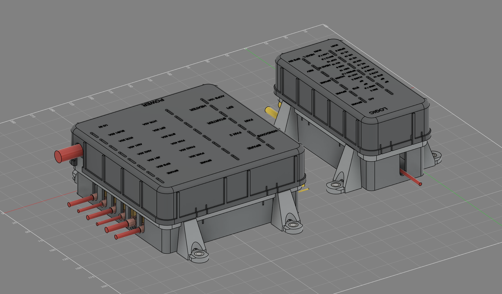
Battery relay block

- cover (snaps on) - the lid
- fuel pump relay, TE HCR150
- coil plug (Superseal 1.5)
- AMI 40 A fuse
- copper bar: battery stud + fuse in
- copper pad: fuse out
- fuse pedestal (printed, part of the base)
- end tab, M6 + steel limiter (one each end)
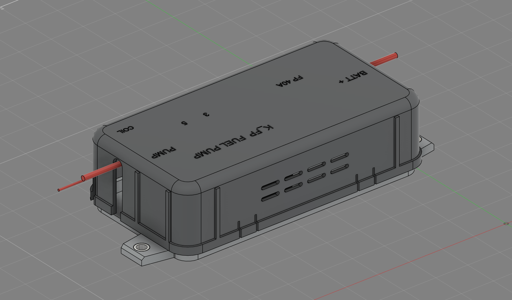


Style (Z9: your pick, S27) - Blue Sea Systems 7720 Safety Fuse Block (AMI / MIDI)
Chosen by Claude (Dan, Z9 2026-10-14: "your pick"; DECISIONS S27). It fits all four asks: open frame (a low base and a cover - no closed tub); lid on, no screws (the cover is a separate part that comes off by hand); no cable holes (its cover breakouts give wire access from three directions, so cables come in under the cover, not through the base); and it takes the same AMI fuse we use, built for wet, vibrating places (marine). 125 x 38 mm for one fuse (Blue Bottle Marine listing BS-7720). The one change: its 2 fixings become 2 end tabs (rev 5: Dan wants the mounts on the short ends), set beside the cables so none leaves over a tab. Not chosen: Bussmann RTMR (a Mini ISO / mini-fuse module - no room for the HCR150 and an AMI); MTA / Littelfuse sealed power-distribution boxes (closed tubs with cable seals, i.e. holes, the opposite of open); Blue Sea MRBF terminal blocks (they sit on the battery post).
| You asked for | How the block meets it |
|---|---|
| Open frame | Floor plate, rims on the two long sides only, both ends open - the cover is the only enclosure. |
| Snap or screw lid | Snap: 4 cantilever tongues into pockets in the side rims (no screws, no inserts). |
| 2 tabs, on the short ends (rev 5) | One tab on each end at y 67 (rear half), M6 through a steel limiter (rev 6). |
| No cable over a tab | Battery feed in at the -x end, pump cable and coil lead out at the +x end, all at the front half; the tabs sit at the rear half. |
| No cable holes | Cables pass under open notches in the cover ends (the 7720 breakout idea); the base has no holes for cables. |
Slot map
| Unit | Position | Fuse / relay | Part | Wire |
|---|---|---|---|---|
| POWER | AMI IN-1 | HTR | AMI-40 | 8 AWG |
| POWER | AMI IN-2 | EFI | AMI-30 | 12 AWG |
| POWER | AMI IN-3 | STR | AMI-30 | 12 AWG |
| POWER | AMI IN-4 | FAN | AMI-40 | 8 AWG |
| POWER | AMI IN-5 | FAN2 | AMI-30 | 8 AWG |
| POWER | AMI IN-6 | PWR | AMI-30 | 10 AWG |
| POWER | AMI IN-7 | spare | - | - |
| POWER | AMI OUT-1 | BUS1 | AMI-50 | 8 AWG |
| POWER | AMI OUT-2 | RTR | AMI-30 | 10 AWG |
| POWER | AMI OUT-3 | AM1 | AMI-40 | 8 AWG |
| POWER | AMI OUT-4 | AM2 | AMI-30 | 10 AWG |
| POWER | AMI OUT-5 | JB1 | AMI-60 | 6 AWG |
| POWER | AMI OUT-6 | EPS | AMI-60 | 8 AWG |
| POWER | AMI OUT-7 | spare | - | - |
| POWER | R1 (column A) | heater (fed by AMI IN-1) | 1-1414687-0 (BUY) | |
| POWER | R2 (column B) | k_efi (fed by AMI IN-2) | 1-1414147-0 (OWN) | |
| POWER | R3 (column A) | k_str (fed by AMI IN-3) | 1-1414147-0 (OWN) | |
| POWER | R4 (column B) | k_fan (fed by AMI IN-4) | 1-1414147-0 (OWN) | |
| POWER | R5 (column A) | k_fan2 (fed by AMI IN-5) | 1-1393304-0 (OWN) | |
| POWER | R6 (column B) | power (fed by AMI IN-6) | 1-1393304-0 (OWN) | |
| POWER | R7 (column A) | SPARE (fed by AMI IN-7) | - | |
| POWER | front of column B | ACPS mini fuse (heater 87) | ATM-10 | 14 AWG |
| LOGIC | BUS1-1 | EFI86 (Bus 1) | ATM-5 | 20 AWG |
| LOGIC | BUS1-2 | HL (Bus 1) | ATM-15 | 16 AWG |
| LOGIC | BUS1-3 | HR (Bus 1) | ATM-15 | 16 AWG |
| LOGIC | BUS1-4 | HZ (Bus 1) | ATM-15 | 16 AWG |
| LOGIC | BUS1-5 | DM (Bus 1) | ATM-20 | 14 AWG |
| LOGIC | BUS1-6 | WL (Bus 1) | ATM-15 | 16 AWG |
| LOGIC | BUS1-7 | ALM (Bus 1) | ATM-5 | 20 AWG |
| LOGIC | BUS1-8 | ALMS (Bus 1) | ATM-2 | 20 AWG |
| LOGIC | BUS1-9 | ALTS (Bus 1) | ATM-2 | 20 AWG |
| LOGIC | BUS1-10 | ETB (Bus 1) | ATM-10 | 18 AWG |
| LOGIC | BUS1-11 | spare (Bus 1) | - | - |
| LOGIC | BUS1-12 | spare (Bus 1) | - | - |
| LOGIC | BUS2-1 | LAM (Bus 2) | ATM-7.5 | 18 AWG |
| LOGIC | BUS2-2 | SW12 (Bus 2) | ATM-7.5 | 18 AWG |
| LOGIC | BUS2-3 | COP (Bus 2) | ATM-15 | 16 AWG |
| LOGIC | BUS2-4 | INJ (Bus 2) | ATM-15 | 16 AWG |
| LOGIC | BUS2-5 | CSB (Bus 2) | ATM-5 | 20 AWG |
| LOGIC | BUS2-6 | DEV (Bus 2) | ATM-15 | 16 AWG |
| LOGIC | BUS2-7 | EPSEN (Bus 2) | ATM-7.5 | 18 AWG |
| LOGIC | BUS2-8 | ACC (Bus 2) | ATM-10 | 18 AWG |
| LOGIC | BUS2-9 | ALMIG (Bus 2) | ATM-2 | 20 AWG |
| LOGIC | BUS2-10 | spare (Bus 2) | - | - |
| LOGIC | BUS2-11 | spare (Bus 2) | - | - |
| LOGIC | BUS2-12 | MRS (own input) | ATM-7.5 | 18 AWG |
| LOGIC | BUS2-13 | B30 (own input) | ATM-2 | 20 AWG |
| LOGIC | M11 | HEAD LH | 5-1393292-8 (OWN) | |
| LOGIC | M12 | HEAD RH | 5-1393292-8 (OWN) | |
| LOGIC | M13 | horn | 4-1904124-3 (OWN) | |
| LOGIC | M14 | k_etb | 4-1904124-2 (OWN) | |
| LOGIC | M15 | k_acc | 6-1419137-4 (OWN) | |
| LOGIC | M21 | k_eps_en | 6-1419137-4 (OWN) | |
| LOGIC | M22 | k_rev | 6-1419137-4 (BUY) | |
| LOGIC | M23 | spare | - | |
| LOGIC | M24 | spare | - | |
| LOGIC | M25 | spare | - | |
| BATTERY | F1 | FP fuse 40 A | AMI-40 | 10 AWG |
| BATTERY | K1 | k_fp fuel pump relay | 1416010-1 HCR150 (OWN) | 10 AWG |
Printed parts (PA12, powder-bed)
| Part | File (STL + STEP) | Size mm (x y z, incl. legs / tabs) | Volume / mass | What it is |
|---|---|---|---|---|
| Logic Base | Logic_Base_PA12_printed.stlLogic_Base_PA12_printed.step | 143.0 x 181.0 x 60.5 | 237.1 cm³ / ~239 g | Same idea: deck on four angular legs (on the two long sides), mini-fuse and micro-relay cavities through; rev 6: a printed spine hangs between the two bus strips (lips under both, holes for the bolt tips). |
| Logic Pan | Logic_Pan_PA12_printed.stlLogic_Pan_PA12_printed.step | 74.5 x 174.1 x 41.0 | 72.0 cm³ / ~73 g | NEW: a shallow tray under the open bottom (2.5 mm floor and wall). Its wall slides 4 mm up inside the skirt; 4 tongues catch in pockets in the skirt. Notches in its wall let the bundles out. |
| Logic Cover | Logic_Cover_PA12_printed.stlLogic_Cover_PA12_printed.step | 87.9 x 189.9 x 42.4 | 93.5 cm³ / ~94 g | Rounded shell, 2.5 mm wall, R13 plan corners, R5 top edges, a bumper band round the bottom and ribs up the walls; 4 snap tongues; vent slots; every relay and fuse name etched 0.6 deep (the rev 4 labels, unchanged). |
| Power Base | Power_Base_PA12_printed.stlPower_Base_PA12_printed.step | 180.5 x 245.0 x 52.5 | 361.6 cm³ / ~365 g | The deck on four angular legs (front and rear faces): 6 mm top plate, 3 mm skirt, cavity towers, standoff and bolt-head bosses, ribs, six printed R16 saddles under it; open underneath. Steel M6 limiter in each foot. |
| Power Pan | Power_Pan_PA12_printed.stlPower_Pan_PA12_printed.step | 173.6 x 176.5 x 34.5 | 120.4 cm³ / ~122 g | NEW: a shallow tray under the open bottom (2.5 mm floor and wall). Its wall slides 4 mm up inside the skirt; 4 tongues catch in pockets in the skirt. Notches in its wall let the bundles out. |
| Power Cover | Power_Cover_PA12_printed.stlPower_Cover_PA12_printed.step | 189.4 x 189.9 x 42.3 | 160.0 cm³ / ~162 g | Rounded shell, 2.5 mm wall, R13 plan corners, R5 top edges, a bumper band round the bottom and ribs up the walls; 4 snap tongues; vent slots; every relay and fuse name etched 0.6 deep (the rev 4 labels, unchanged). |
| BattRelay Base | BattRelay_Base_PA12_printed.stlBattRelay_Base_PA12_printed.step | 228.0 x 92.0 x 36.2 | 124.5 cm³ / ~126 g | Floor plate, rim on the long sides only (both ends open), relay platform with 2 captured M6 nuts + limiters, one ribbed fuse pedestal under the bar and pad, a tab on each short end. |
| BattRelay Cover | BattRelay_Cover_PA12_printed.stlBattRelay_Cover_PA12_printed.step | 192.9 x 100.9 x 47.5 | 107.0 cm³ / ~108 g | Rounded shell, 2.5 mm wall, R13 plan corners, R5 top edges, a bumper band round the bottom and ribs up the walls; 4 snap tongues; vent slots; every relay and fuse name etched 0.6 deep (the rev 4 labels, unchanged). |
Mass at the HP PA12 density 1.01 g/cm³. Metal parts are STEP only, plus the whole assembly (ST185_fusebox_rev6_assembly.step).
Designed for powder-bed printing
- Walls: 3 mm base skirt, 6 mm deck plate, 2.5 mm towers, ribs, cover and pan walls, 3 mm leg walls. Nothing under 2.0 mm.
- No trapped powder: bases, legs and pans are open, covers are open shells; no closed cavity anywhere.
- Fits: 0.45 mm per side printed to printed (cover over base, pan inside the skirt); 0.4 mm per side metal in a printed pocket.
- Snaps: tongue 12 wide, 11 long between two 1.2 slots, half-round catch 2.4 - covers and pans alike.
- Threads: none printed, no heat-set inserts. Every bolt goes into metal: standoffs, nuts, captured heads, the tapped LOGIC strips.
- Heat: PA12 HDT 95 °C at 1.82 MPa. The 1" x 1/4" copper bar is three times the 1/0 copper; bench check at full load with a thermocouple anyway. The vent slots let the relay coil heat out.
- Live-part spacing (measured in Fusion): AMI pads 3.0 mm apart, bar to any output 17.1, 1/0 lug to nearest output 8.2, output lugs 5.5, standoffs 10.0; Bus 1 / Bus 2 strips 3.8 (spine between), their feed lugs 106.8; jumper lug to lug 1.9 (ring to ring 3.0), jumper bolt tip to the other strip 0.7, jumper parts to plastic 0.6 and to the harness wires 0.6; battery bar to pad 17.0, HCR150 lugs 5.0; belly pan to nearest live part 0.6.
Interference check (all three units, every printed, copper and bought part): none.
Parts lists (one per box, OWN / BUY)
Order (R38): on-hand TE list, then TE, then the approved suppliers, then others with a reason. Rule R82 (Dan): every line is a real part you can buy, with a live source link and a part number checked against a maker sheet or listing (the "Checked against" column says which); no TBD, no "or equivalent". The 3D-printed box parts are the one exception: the STL / STEP file + PA12, no link. "OWN" = on the shelf, qty_ordered from te-on-hand-bom.csv, handed out box by box (confirm on the shelf). Prices: seen = read on a listing 2026-10-14, est = typical price, not checked; both move. Spares are included in the quantity (10 %, at least 2, on small parts). The same lines are in the CSVs beside this page and the BUY lines are in the repo buy list (docs/harness/NEED-TO-BUY.md). Mount bolts / nuts are not listed: the boxes only (C3).
POWER box (glove box) - fusebox-parts-power.csv - est. $256.78 to buy
| Group | Item | Part number | Maker | Need + spare | OWN | BUY | Unit $ | Checked against / note |
|---|---|---|---|---|---|---|---|---|
| Printed | Power Base | Power_Base_PA12_printed.stl + .step (PA12) | print (your PA12 powder-bed printer) | 1 + 0 | 0 | 1 | 36.16 est | report volume 361.6 cm3; est. $0.10/cm3 on the printer's material cost; file is the STL/STEP in cad/fusebox (rule R82: printed parts need no buy link) |
| Printed | Power Pan (belly pan) | Power_Pan_PA12_printed.stl + .step (PA12) | print (your PA12 powder-bed printer) | 1 + 0 | 0 | 1 | 12.04 est | report volume 120.4 cm3; est. $0.10/cm3 on the printer's material cost; file is the STL/STEP in cad/fusebox (rule R82: printed parts need no buy link) |
| Printed | Power Cover | Power_Cover_PA12_printed.stl + .step (PA12) | print (your PA12 powder-bed printer) | 1 + 0 | 0 | 1 | 16.00 est | report volume 160.0 cm3; est. $0.10/cm3 on the printer's material cost; file is the STL/STEP in cad/fusebox (rule R82: printed parts need no buy link) |
| Copper | Power bar 25.4 x 6.35 x 148 mm, tinned | MECCANIXITY B0CGJBRNJX | MECCANIXITY (Amazon) | 1 + 0 | 0 | 1 | 26.19 seen | summary "Copper" section; seller page 2026-10-14 Cut + drill only (R76): 15 holes, drawing on the summary page. Stock bought here covers BATTRELAY too. |
| Copper | Output pads 15 x 3 x 17.5 mm, tinned (14 here + 1 in BATTRELAY) | Bopaodao B09Z7NBLDK | Bopaodao (Amazon) | 1 + 0 | 0 | 1 | 51.99 seen | summary "Copper" section; seller page 2026-10-14 One drilled hole each (5.5 mm). |
| Fuses | AMI bolt-down fuse 30 A | AMI-30 | Eaton Bussmann | 6 + 0 | 0 | 6 | 5.30 seen | Waytek listing; Bussmann AMI sheet (spec.py AMI dims) Other maker (R38 step 4): TE sells no bolt-down fuse. Slots: EFI, STR, FAN2, PWR, RTR, AM2 |
| Fuses | AMI bolt-down fuse 40 A | AMI-40 | Eaton Bussmann | 3 + 0 | 0 | 3 | 5.30 seen | Waytek listing; Bussmann AMI sheet (spec.py AMI dims) Other maker (R38 step 4): TE sells no bolt-down fuse. Slots: HTR, FAN, AM1 |
| Fuses | AMI bolt-down fuse 50 A | AMI-50 | Eaton Bussmann | 1 + 0 | 0 | 1 | 5.30 seen | Waytek listing; Bussmann AMI sheet (spec.py AMI dims) Other maker (R38 step 4): TE sells no bolt-down fuse. Slots: BUS1 |
| Fuses | AMI bolt-down fuse 60 A | AMI-60 | Eaton Bussmann | 2 + 0 | 0 | 2 | 5.30 seen | Waytek listing; Bussmann AMI sheet (spec.py AMI dims) Other maker (R38 step 4): TE sells no bolt-down fuse. Slots: JB1, EPS |
| Fuses | ACPS mini blade fuse 10 A | ATM-10 | Eaton Bussmann | 1 + 0 | 0 | 1 | 0.55 est | Stanion listing; Littelfuse / Bussmann ATM blade 2.8 x 0.8 mm (ISO 8820-3 mini) Front of relay column B, fed from heater 87. |
| Relays | Heater relay k_htr, 1 form C, 12 V, 680 ohm | 1-1414687-0 | TE Connectivity | 1 + 0 | 0 | 1 | 9.00 est | TE data sheet V23136X0000A004 (Power Relay F4 A, 2023-09) p.1: 1 form C limiting continuous current 40/30 A at 85 C; TE page: Active REPLACES 1-1904020-2 (Power Relay B V23234-A0001-X032): TE lists it and every V23234 1 form C variant as Superseded. 40 A NO = the 40 A AMI HTR fuse, so the 40 A fuse vs 35 A relay mismatch (row 107) is closed without changing the fuse. Mini ISO pin pattern, 6.3 x 0.8 tabs; check the 28.5 mm pocket against the F4 A drawing. |
| Relays | Relay k_efi / k_str / k_fan (Maxi ISO F7, 1 form A, 680 ohm) | 1-1414147-0 | TE Connectivity | 3 + 0 | 3 | 0 | TE page + data sheet V23134X0000A002 (F7 Maxi ISO, QC terminals); te-on-hand-bom.csv qty_ordered 3 On the shelf (R38 step 1). Earlier pages called the F7 "Mini ISO": the data sheet title is "Maxi ISO". | |
| Relays | Relay k_fan2 / power (Maxi ISO F7, bracket, 560 ohm) | 1-1393304-0 | TE Connectivity | 2 + 0 | 2 | 0 | te-on-hand-bom.csv qty_ordered 2; same F7 data sheet | |
| Terminals | Maxi relay load receptacle 9.5 x 1.2, 12-10 AWG | 280756-4 | TE Connectivity | 6 + 2 | 0 | 8 | 0.40 est | TE page (tab 9.53 x 1.22, 12-10 AWG) + TE data sheet VCF7-X0000-A001 (Connectors for Mini / Maxi ISO relays) (load 3.3-5.3 mm2) 30 / 87 of k_efi, k_str, power (12 / 12 / 10 AWG). |
| Terminals | Maxi relay load receptacle 9.5 x 1.2, 10-7 AWG | 280755-4 | TE Connectivity | 4 + 2 | 0 | 6 | 0.50 est | TE page (tab 9.53 x 1.22, 10-7 AWG) + TE data sheet VCF7-X0000-A001 (Connectors for Mini / Maxi ISO relays) (load 5.3-13.3 mm2) 30 / 87 of k_fan, k_fan2 (8 AWG). |
| Terminals | Relay coil receptacle 6.3 x 0.8, 20-18 AWG (F7 85/86 + heater 85/86) | 1-1393310-8 | TE Connectivity | 12 + 2 | 0 | 14 | 0.12 est | TE data sheet VCF7-X0000-A001 (Connectors for Mini / Maxi ISO relays) "Selection of fitting crimp terminals": 6.3 x 0.8, 0.5-0.8 mm2 (20-18), coil; TE page: Active Coil wires are 20 AWG in spec.py (COIL_AWG). On-hand 42281-1 (18-14 AWG) is too big for 20 AWG, so it goes to the micro relay loads instead. |
| Terminals | Heater relay load receptacle 6.3 x 0.8, 10-8 AWG (30, 87) | 62998-2 | TE Connectivity | 2 + 2 | 0 | 4 | 0.30 est | TE page (tab 6.35 x 0.81, 10-8 AWG); relay drawing V23234-A0001-X040: DIN 46244 A6.3-0.8 blades on all 5 terminals; F4 A sheet: Mini ISO pattern Heater 30 / 87 are 8 AWG (ST185-CabinPower k_htr). 87a is 14 AWG: a 42281-1 (next line). A Mini ISO relay has no 9.5 blade. |
| Terminals | Heater relay 87a receptacle 6.3 x 0.8, 18-14 AWG | 42281-1 | TE Connectivity | 1 + 1 | 2 | 0 | 0.10 est | TE page (6.35 x 0.81, 18-14 AWG); te-on-hand-bom.csv qty_ordered 20; ST185-CabinPower k_htr 87a 14 AWG OPEN-ITEMS row 110 (c). |
| Terminals | Mini fuse receptacle 2.8 x 0.8, 17-13 AWG (ACPS input, 14 AWG) | 880398-2 | TE Connectivity | 1 + 1 | 0 | 2 | 0.15 est | TE page (tab 2.8 x 0.8, 1-2.5 mm2, 17-13 AWG); ST185-CabinPower ACPS in 14 AWG ACPS input from heater 87 (row 110 (c)). |
| Terminals | Mini fuse receptacle 2.8, 20-18 AWG (ACPS output, 18 AWG) | 1241388-2 | TE Connectivity | 1 + 1 | 2 | 0 | 0.35 est | TE page (2.8 mm tab, 0.6 / 0.8 thick, 0.5-1 mm2); te-on-hand-bom.csv qty_ordered 10; ST185-CabinPower ACPS out 18 AWG Row 110 (c). |
| Lugs | Tubular lug 10 mm2, M5 hole (8-10 AWG) | Klauke 2R5 | Klauke | 9 + 2 | 0 | 11 | 0.70 est | Buerklin listing 07F2065 (hole 5.3, M5) + Klauke table b 12 l 22 AMI outputs and relay feeds on 8-10 AWG: HTR, FAN, FAN2, PWR, BUS1, RTR, AM1, AM2, EPS. |
| Lugs | Tubular lug 16 mm2, M5 hole (6 AWG) | Klauke 3R5MS | Klauke | 1 + 1 | 0 | 2 | 1.10 est | Buerklin listing 07F9752 (16 mm2, M5, hole 5.5) JB1 60 A output, 6 AWG. The 3R5MS is the 3R5 with an inspection hole: same barrel. |
| Lugs | Ring lug 12-10 AWG, M5 / #10 hole | 36161 | TE Connectivity | 2 + 2 | 0 | 4 | 0.25 est | TE page (12-10 AWG, #10 / 5 mm stud, PIDG, Active); RS listings call the same family "M5 stud size" EFI and STR feeds (12 AWG). Hole 5.1 mm over the 5 mm M5 bolt - snug, check a sample. |
| Lugs | Tubular lug 50 mm2, M8 hole (1/0 input) | Klauke 6R8 | Klauke | 1 + 0 | 0 | 1 | 2.60 est | Buerklin listing 07F2081 (hole 8.4, M8) |
| Standoffs | Brass hex standoff M5 female-female, 8 AF, 40 mm (ONE part number for all 14) | Essentra 301540040050 | Essentra Components | 14 + 0 | 0 | 14 | 0.60 est | Essentra listing (female-female, M5, 8.0 AF, 40.0 mm, nickel-plated brass); no TE part and none of the R38 approved suppliers lists standoffs (step 4) B5 (Dan): one 40 mm part number for every standoff: 7 IN row + 7 OUT row = 14, all drawn 40 mm in CAD rev 6; the LOGIC box has none any more (its feed lugs bolt onto the strips). Sold in 50s. |
| Fasteners | Set screw M5 x 12 (stud on each pad standoff) | RS 137-809 | RS PRO | 14 + 2 | 0 | 16 | 0.12 est | RS listing (stock number, size, standard) read 2026-10-14 Through the pad into the standoff (5 mm of thread); DIN 916 is a cup point - irrelevant for a stud. |
| Fasteners | Hex bolt M5 x 10 (lug under each standoff, IN and OUT rows) | RS 287-3921 | RS PRO | 14 + 2 | 0 | 16 | 0.10 est | RS listing (stock number, size, standard) read 2026-10-14 One length for both rows now that every standoff is 40 mm. |
| Fasteners | Hex bolt M5 x 16 (AMI input stud on the bar, head captured) | RS 263-2205 | RS PRO | 14 + 2 | 0 | 16 | 0.12 est | RS listing (stock number, size, standard) read 2026-10-14 |
| Fasteners | Keps nut M5 (AMI input + output ears, 2 per position) | RS 264-6432 | RS PRO | 28 + 3 | 0 | 31 | 0.07 est | RS listing (stock number, size, standard) read 2026-10-14 4 Nm max (AMI sheet). |
| Fasteners | Hex bolt M8 x 25 (1/0 input stud) | RS 190-276 | RS PRO | 1 + 1 | 0 | 2 | 0.30 est | RS listing (stock number, size, standard) read 2026-10-14 Rev 5 CAD draws M8 x 20; the nearest stocked stainless length is 25 (RS lists no M8 x 20). |
| Fasteners | Hex nut M8 (1/0 input stud) | RS 530-769 | RS PRO | 1 + 1 | 0 | 2 | 0.08 est | RS listing (stock number, size, standard) read 2026-10-14 |
| Fasteners | Plain washer M8 (1/0 input stud) | RS 797-6068 | RS PRO | 1 + 1 | 0 | 2 | 0.05 est | RS listing (stock number, size, standard) read 2026-10-14 |
| Mounting | Compression limiter, feet (4) | EFC 10S00056 | EFC International | 4 + 1 | 0 | 5 | 0.30 est | EFC comparison table 2026-10-14 (EFC lists no M5 limiter); CAD rev 6 foot: 10.2 press-fit pocket, 6 mm ear C1 (Dan): M6 limiters in all 10 mount points. Mount bolts / nuts are not part of the box (C3). |
LOGIC box (glove box) - fusebox-parts-logic.csv - est. $109.20 to buy
| Group | Item | Part number | Maker | Need + spare | OWN | BUY | Unit $ | Checked against / note |
|---|---|---|---|---|---|---|---|---|
| Printed | Logic Base | Logic_Base_PA12_printed.stl + .step (PA12) | print (your PA12 powder-bed printer) | 1 + 0 | 0 | 1 | 23.71 est | report volume 237.1 cm3; est. $0.10/cm3 on the printer's material cost; file is the STL/STEP in cad/fusebox (rule R82: printed parts need no buy link) |
| Printed | Logic Pan (belly pan) | Logic_Pan_PA12_printed.stl + .step (PA12) | print (your PA12 powder-bed printer) | 1 + 0 | 0 | 1 | 7.20 est | report volume 72.0 cm3; est. $0.10/cm3 on the printer's material cost; file is the STL/STEP in cad/fusebox (rule R82: printed parts need no buy link) |
| Printed | Logic Cover | Logic_Cover_PA12_printed.stl + .step (PA12) | print (your PA12 powder-bed printer) | 1 + 0 | 0 | 1 | 9.35 est | report volume 93.5 cm3; est. $0.10/cm3 on the printer's material cost; file is the STL/STEP in cad/fusebox (rule R82: printed parts need no buy link) |
| Copper | Logic strips 25.4 x 3.2 mm on edge, tinned: BUS1 115 mm + BUS2 119 mm | MECCANIXITY B0CGJC2S1L | MECCANIXITY (Amazon) | 1 + 0 | 0 | 1 | 27.19 seen | spec.py STOCK runner-up list 2026-10-14 (25.4 x 3.2 x 305, 2 pcs, $27.19) Rev 6 (C4): replaces the 10 x 3 Nassau bar. Cut, drill and tap (R76): M4 at each lug stud, M5 at the feed - drawing on the summary page. |
| Fuses | Mini blade fuse 2 A (ATM) | ATM-2 | Eaton Bussmann | 4 + 0 | 0 | 4 | 0.55 est | distributor listing; Littelfuse / Bussmann ATM, 2.8 x 0.8 mm blade (ISO 8820-3 mini) Other maker: TE makes no blade fuse. ALMS, ALTS, ALMIG, B30 |
| Fuses | Mini blade fuse 5 A (ATM) | ATM-5 | Eaton Bussmann | 3 + 0 | 0 | 3 | 0.55 est | distributor listing; Littelfuse / Bussmann ATM, 2.8 x 0.8 mm blade (ISO 8820-3 mini) Other maker: TE makes no blade fuse. EFI86, ALM, CSB |
| Fuses | Mini blade fuse 7.5 A (ATM) | ATM-7-1/2 | Eaton Bussmann | 4 + 0 | 0 | 4 | 0.55 est | distributor listing; Littelfuse / Bussmann ATM, 2.8 x 0.8 mm blade (ISO 8820-3 mini) Other maker: TE makes no blade fuse. LAM, SW12, EPSEN, MRS |
| Fuses | Mini blade fuse 10 A (ATM) | ATM-10 | Eaton Bussmann | 2 + 0 | 0 | 2 | 0.55 est | distributor listing; Littelfuse / Bussmann ATM, 2.8 x 0.8 mm blade (ISO 8820-3 mini) Other maker: TE makes no blade fuse. ETB, ACC |
| Fuses | Mini blade fuse 15 A (ATM) | ATM-15 | Eaton Bussmann | 7 + 0 | 0 | 7 | 0.55 est | distributor listing; Littelfuse / Bussmann ATM, 2.8 x 0.8 mm blade (ISO 8820-3 mini) Other maker: TE makes no blade fuse. HL, HR, HZ, WL, COP, INJ, DEV |
| Fuses | Mini blade fuse 20 A (ATM) | ATM-20 | Eaton Bussmann | 1 + 0 | 0 | 1 | 0.55 est | distributor listing; Littelfuse / Bussmann ATM, 2.8 x 0.8 mm blade (ISO 8820-3 mini) Other maker: TE makes no blade fuse. DM |
| Relays | Micro relay: k_etb | 4-1904124-2 | TE Connectivity | 1 + 0 | 1 | 0 | TE page; te-on-hand-bom.csv | |
| Relays | Micro relay: horn | 4-1904124-3 | TE Connectivity | 1 + 0 | 1 | 0 | TE page; te-on-hand-bom.csv | |
| Relays | Micro relay: HEAD LH, HEAD RH | 5-1393292-8 | TE Connectivity | 2 + 0 | 2 | 0 | TE page; customer drawing V23074-A2001-A402-CD: terminals 1, 2 coil 4.8 x 0.8, 3, 5 load 6.3 x 0.8 | |
| Relays | Micro relay: k_acc, k_eps_en, k_rev | 6-1419137-4 | TE Connectivity | 3 + 0 | 2 | 1 | TE page; te-on-hand-bom.csv On the shelf first (R38 step 1); the third 1 form C (k_rev) is the only buy. | |
| Terminals | Micro relay coil receptacle 4.8 x 0.8, 20-15 AWG | 2293255-1 | TE Connectivity | 14 + 2 | 0 | 16 | 0.10 est | TE page (4.75 mm tab, 20-15 AWG); relay drawing coil blades 4.8 x 0.8 2 per micro relay x 7 relays; coil wire 20 AWG. |
| Terminals | Micro relay load receptacle 6.3 x 0.8, 18-14 AWG | 42281-1 | TE Connectivity | 17 + 2 | 18 | 1 | 0.10 est | TE page (6.35 x 0.81, 18-14 AWG); relay drawing load blades 6.3 x 0.8; te-on-hand-bom.csv qty_ordered 20 16 AWG loads (MICRO_LOAD_AWG). 2 on a form A, 3 on a form C. |
| Terminals | Mini fuse receptacle 2.8, 20-18 AWG (outputs + MRS / B30 inputs) | 1241388-2 | TE Connectivity | 11 + 2 | 8 | 5 | 0.35 est | TE page (2.8 mm tab, 0.6 / 0.8 thick, 0.5-1 mm2); te-on-hand-bom.csv qty_ordered 10; ST185-CabinPower fb_logic contacts By wire gauge (row 110 (c)): outputs ALM, ALMIG, ALMS, ALTS, B30, CSB, EFI86, EPSEN, MRS + inputs MRS, B30. |
| Terminals | Mini fuse receptacle 2.8, 17-13 AWG (16-14 AWG outputs + the 19 input jumpers) | 880398-2 | TE Connectivity | 31 + 4 | 0 | 35 | 0.15 est | TE page (2.8 x 0.8, 1-2.5 mm2, 17-13 AWG); ST185-CabinPower fb_logic contacts Outputs HL, HR, HZ, DM, WL, ETB, LAM, SW12, COP, INJ, DEV, ACC (12) + one per input jumper (19, 14 AWG, C4). DM is 14 AWG (13 AWG max here). |
| Jumpers | Input jumper ring lug, 16-14 AWG, #8 / M4 (one per fuse input) | 53941-1 | TE Connectivity | 19 + 2 | 0 | 21 | 0.37 seen | TE page 53941-1 2026-10-14 (PIDG, #8 / M4, 16-14, overall 20.65, tongue 0.78, Active); Future Electronics listing $0.37 at 50, 22,000 in stock C4 (Dan, option C). R38 step 2 (TE). TE sells it through distributors only ("not currently available" direct): Future link. Ring / sleeve size from the PIDG family - read off the first sample. |
| Jumpers | Input jumper wire 14 AWG, ~60 mm each (19), per foot | M22759/16-14-2 | M22759 (Tefzel, red) | 5 + 2 | 0 | 7 | 1.00 est | ST185.harnesslib wire part m16_14_2; AWC M22759/16-14 listing (19 strands tinned copper, ETFE, 600 V, 150 C) 19 x ~60 mm = 1.1 m (5 ft) + spare. R38 step 4: no ProWire USA listing for M22759/16-14 confirmed; AWC sells it by the foot. The same reel as the harness 14 AWG if one is bought. |
| Jumpers | Hex bolt M4 x 8, into the tapped strip (one per jumper lug) | RS 287-3915 | RS PRO | 19 + 2 | 0 | 21 | 0.08 est | RS listing (stock number, size, standard) read 2026-10-14 Head on the lug side; 3.1 mm of thread past the strip, 0.68 mm short of the other strip (Fusion). Spare studs stay as tapped holes. |
| Jumpers | Spring washer M4 under each jumper bolt head | RS 231-0691 | RS PRO | 19 + 2 | 0 | 21 | 0.05 est | RS listing (stock number, size, standard) read 2026-10-14 |
| Lugs | Tubular lug 10 mm2, M5 hole (BUS1 8 AWG, BUS2 10 AWG feeds) | Klauke 2R5 | Klauke | 2 + 1 | 0 | 3 | 0.70 est | Buerklin listing 07F2065 |
| Fasteners | Hex bolt M5 x 10, feed lug into the tapped strip (2) | RS 287-3921 | RS PRO | 2 + 2 | 0 | 4 | 0.10 est | RS listing (stock number, size, standard) read 2026-10-14 Rev 6: no standoffs in the LOGIC box; the feed lug bolts straight onto the strip face. |
| Mounting | Compression limiter, feet (4) | EFC 10S00056 | EFC International | 4 + 1 | 0 | 5 | 0.30 est | see POWER list C1. Mount bolts / nuts are not part of the box (C3). |
Battery relay block (trunk) - fusebox-parts-battrelay.csv - est. $36.03 to buy
| Group | Item | Part number | Maker | Need + spare | OWN | BUY | Unit $ | Checked against / note |
|---|---|---|---|---|---|---|---|---|
| Printed | BattRelay Base | BattRelay_Base_PA12_printed.stl + .step (PA12) | print (your PA12 powder-bed printer) | 1 + 0 | 0 | 1 | 12.45 est | report volume 124.5 cm3; est. $0.10/cm3 on the printer's material cost; file is the STL/STEP in cad/fusebox (rule R82: printed parts need no buy link) |
| Printed | BattRelay Cover | BattRelay_Cover_PA12_printed.stl + .step (PA12) | print (your PA12 powder-bed printer) | 1 + 0 | 0 | 1 | 10.70 est | report volume 107.0 cm3; est. $0.10/cm3 on the printer's material cost; file is the STL/STEP in cad/fusebox (rule R82: printed parts need no buy link) |
| Copper | Bar 25.4 x 6.35 x 36.5 mm, tinned (cut from the POWER bar stock) | MECCANIXITY B0CGJBRNJX | MECCANIXITY (Amazon) | 0 + 0 | 0 | 0 | stock bought in the POWER list Holes: M6 feed 6.5, AMI 40 input 5.5. | |
| Copper | Pad 15 x 3 x 17.5 mm, tinned (cut from the pad stock) | Bopaodao B09Z7NBLDK | Bopaodao (Amazon) | 0 + 0 | 0 | 0 | stock bought in the POWER list | |
| Relay | Fuel pump relay k_fp, HCR150, 12 V, 130 A, IP67 | 1416010-1 | TE Connectivity | 1 + 0 | 1 | 0 | TE page + data sheet V23132-X0000-A001 (130 A contact, 150 A limiting, 3.9 W coil, M6 5 Nm, lug up to 25 mm2); te-on-hand-bom.csv qty_ordered 2 On the shelf. The second HCR150 is the k_eps relay (not in a box list). | |
| Relay | Coil plug housing, Superseal 1.5, 2 pole | 282080-1 | TE Connectivity | 1 + 0 | 1 | 0 | HCR150 data sheet "Connector Information": coil side housing 282080-1, wire seal 281934-2, contact 282110-1; te-on-hand-bom.csv qty_ordered 2 Earlier summary said BUY 1: it is on the shelf (OWN). | |
| Relay | Coil plug contact | 282110-1 | TE Connectivity | 2 + 1 | 3 | 0 | HCR150 data sheet; te-on-hand-bom.csv qty_ordered 10 Earlier summary said BUY 2 for seal / contact: both on the shelf. | |
| Relay | Coil plug wire seal | 281934-2 | TE Connectivity | 2 + 1 | 3 | 0 | HCR150 data sheet; te-on-hand-bom.csv qty_ordered 10 | |
| Fuses | AMI bolt-down fuse 40 A (FP) | AMI-40 | Eaton Bussmann | 1 + 0 | 0 | 1 | 5.30 seen | Waytek AMI-40 listing Same part as the POWER AMI-40s: order them together. |
| Lugs | Ring lug 6 mm2, M6 hole (feed in, relay terminal 3, relay terminal 5; 10 AWG) | Klauke 1R6 | Klauke | 3 + 1 | 0 | 4 | 0.55 est | Voltus / Galaxus / RS listings; HCR150 sheet: M6 load screws, lug up to 25 mm2 10 AWG = 5.3 mm2, inside the 6 mm2 barrel. |
| Lugs | Tubular lug 10 mm2, M5 hole (AMI out end of the jumper) | Klauke 2R5 | Klauke | 1 + 1 | 0 | 2 | 0.70 est | Buerklin listing 07F2065 |
| Fasteners | Hex bolt M6 x 16 (feed stud, 2 flange bolts) | RS 190-169 | RS PRO | 3 + 1 | 0 | 4 | 0.30 est | RS listing (stock number, size, standard) read 2026-10-14 |
| Fasteners | Hex nut M6 (feed stud, 2 flange nuts captured under the floor) | RS 527-274 | RS PRO | 3 + 1 | 0 | 4 | 0.06 est | RS listing (stock number, size, standard) read 2026-10-14 |
| Fasteners | Plain washer M6 (feed stud, 2 flange bolts) | RS 287-3962 | RS PRO | 3 + 1 | 0 | 4 | 0.05 est | RS listing (stock number, size, standard) read 2026-10-14 |
| Fasteners | Hex bolt M5 x 16 (AMI input stud on the bar) | RS 263-2205 | RS PRO | 1 + 1 | 0 | 2 | 0.12 est | RS listing (stock number, size, standard) read 2026-10-14 |
| Fasteners | Keps nut M5 (AMI input + output ears) | RS 264-6432 | RS PRO | 2 + 1 | 0 | 3 | 0.07 est | RS listing (stock number, size, standard) read 2026-10-14 |
| Fasteners | Set screw M5 x 12 (AMI output stud on the pad) | RS 137-809 | RS PRO | 1 + 1 | 0 | 2 | 0.12 est | RS listing (stock number, size, standard) read 2026-10-14 No standoff in this box: the pad sits on the printed pedestal. |
| Mounting | Compression limiter, end tabs (2) | EFC 10S00056 | EFC International | 2 + 1 | 0 | 3 | 0.30 est | EFC comparison table 2026-10-14; the end tab is 6 mm thick, so the L 6 part (rev 5 listed the L 4 one here) C1. Mount bolts / nuts are not part of the box (C3). |
| Mounting | Compression limiter, HCR150 flange bosses (2) | EFC 10S00052 | EFC International | 2 + 1 | 0 | 3 | 0.25 est | EFC comparison table 2026-10-14; CAD rev 6 flange pocket OD 9.8 + 0.8, L 4 Under the relay flange, over the captured M6 nut. |
Total to buy, all three boxes, est. $402.01 (copper stock $105.37 of it). Not in these lists: the harness wires, 1/0 and the battery cables, the mount bolts / nuts (C3), and the k_eps HCR150 beside the POWER box (it is on a loom list).
Copper - tinned, off the shelf, cut and drilled only (R76)
Copper in the model: 498 g.
Power bars (POWER box 148 mm + battery block 36.5 mm)
| Part | Seller / part number | Size mm (W x T x L) | Price | Note | |
|---|---|---|---|---|---|
| PICK | MECCANIXITY 12" x 1" copper flat bar, 1/4" thick, tinned | Amazon B0CGJBRNJX | 25.4 x 6.35 x 305 | $26.19 | One bar makes both power bars with 120 mm left over. |
| runner-up | Tinned copper flat bus bar 3 x 25 x 200 mm, C110 (Bopaodao listing) | Amazon B09Z7KJV65 | 25 x 3 x 200 | $27.79 | Thinner: still 75 mm2 of copper (> the 53 mm2 1/0 feed); 200 mm covers the POWER bar only. |
| runner-up | TEN-HIGH tinned copper flat bar 5 x 30 x 1000 mm | Amazon B08NT3YSXT | 30 x 5 x 1000 | $109.49 | Plenty of stock; 30 wide needs a 5 mm wider bar pocket. |
Output pads (14 POWER + 1 battery block, 17.5 long each)
| Part | Seller / part number | Size mm (W x T x L) | Price | Note | |
|---|---|---|---|---|---|
| PICK | Tinned copper flat bus bar 3 x 15 x 1000 mm, C110 (Bopaodao listing) | Amazon B09Z7NBLDK | 15 x 3 x 1000 | $51.99 | 15 pads use 290 mm with saw kerf; the rest is spare. |
| runner-up | Same stock, 3 x 15 x 200 mm | Amazon B09Z7N2CP6 | 15 x 3 x 200 | $24.99 each (buy 2) | 10 pads per piece. |
| runner-up | MECCANIXITY 2 pcs 12" x 1" x 1/8" tinned | Amazon B0CGJC2S1L | 25.4 x 3.2 x 305 (2) | $27.19 | Pads would be 25.4 long, not 17.5 - the box grows about 8 mm; only if the 15 mm stock is gone. |
Logic strips on edge (rev 6: Bus 1 115 mm, Bus 2 119 mm, 25.4 x 3.2)
| Part | Seller / part number | Size mm (W x T x L) | Price | Note | |
|---|---|---|---|---|---|
| PICK | MECCANIXITY 2 pcs 12" x 1" x 1/8" tinned copper flat bar | Amazon B0CGJC2S1L | 25.4 x 3.2 x 305 (2) | $27.19 | Both strips from one bar (234 mm with kerf); the second bar is spare. Drill + tap M4 at each stud, M5 at the feed. |
| runner-up | Tinned copper flat bus bar 3 x 25 x 200 mm, C110 (Bopaodao listing) | Amazon B09Z7KJV65 | 25 x 3 x 200 | $27.79 each (buy 2) | One strip per piece; 3.0 thick (0.2 thinner - the lugs sit 0.2 further from their jumpers, fine). |
Ready-made option checked: Bussmann LMI (AMI modules on a common bus bar, B109-7046-x) - The only ready-made AMI bus found. It is R18 Option B, which R70 replaced: 25 mm per position (vs 18 here) and its own housings, so it does not fit the printed boxes. Prices seen 2026-10-14, they move. None is a TE part: TE sells no bar stock (R38 step 4).
Cut and drill drawings
Bar and pad holes are plain through holes, deburred; only the LOGIC strips are tapped (M4 / M5, R76: cut, drill, tap). Cut square, break the edges. Re-tin cut ends and holes if you like (optional at 12 V under a cover). End A is the forward (firewall) end in the glove-box boxes, the battery-feed end in the trunk block.
POWER box bar - make 1
From: MECCANIXITY 12" x 1" copper flat bar, 1/4" thick, tinned. Hole 1 = 1/0 input (M8 bolt); the rest = AMI input studs (M5 bolts), inboard row at -6.25, outboard row at +6.25.
| Hole | mm from end A | mm from the centre line | Drill dia |
|---|---|---|---|
| 1 | 12.0 | on centre | 8.5 |
| 2 | 33.0 | -6.25 | 5.5 |
| 3 | 33.0 | +6.25 | 5.5 |
| 4 | 51.0 | -6.25 | 5.5 |
| 5 | 51.0 | +6.25 | 5.5 |
| 6 | 69.0 | -6.25 | 5.5 |
| 7 | 69.0 | +6.25 | 5.5 |
| 8 | 87.0 | -6.25 | 5.5 |
| 9 | 87.0 | +6.25 | 5.5 |
| 10 | 105.0 | -6.25 | 5.5 |
| 11 | 105.0 | +6.25 | 5.5 |
| 12 | 123.0 | -6.25 | 5.5 |
| 13 | 123.0 | +6.25 | 5.5 |
| 14 | 141.0 | -6.25 | 5.5 |
| 15 | 141.0 | +6.25 | 5.5 |
Output pad - make 15
From: Tinned copper flat bus bar 3 x 15 x 1000 mm, C110 (Bopaodao listing). 14 for the POWER box (2 are spares) + 1 for the battery block. End A faces the bar.
| Hole | mm from end A | mm from the centre line | Drill dia |
|---|---|---|---|
| 1 | 6.5 | on centre | 5.5 |
Battery block bar - make 1
From: MECCANIXITY 12" x 1" copper flat bar, 1/4" thick, tinned. Same stock as the POWER bar. Hole 1 = battery feed (M6), hole 2 = AMI 40 input (M5).
| Hole | mm from end A | mm from the centre line | Drill dia |
|---|---|---|---|
| 1 | 12.0 | on centre | 6.5 |
| 2 | 30.0 | on centre | 5.5 |
LOGIC strip BUS1 (on edge, face view) - make 1
From: MECCANIXITY 2 pcs 12" x 1" x 1/8" tinned copper flat bar. End A = the front (firewall) end; "from the centre line" is up (+) / down (-) on the strip as it stands. 3.3 mm holes tapped M4 (jumper lug studs, 12), the 4.2 mm hole tapped M5 (feed lug). Lugs bolt to the face toward the fuse column (Bus 1: inboard face, Bus 2: outboard face).
| Hole | mm from end A | mm from the centre line | Drill dia |
|---|---|---|---|
| 1 | 7.0 | +3.40 | 4.2 |
| 2 | 20.0 | -8.60 | 3.3 |
| 3 | 28.1 | -1.10 | 3.3 |
| 4 | 36.2 | -8.60 | 3.3 |
| 5 | 44.3 | -1.10 | 3.3 |
| 6 | 52.4 | -8.60 | 3.3 |
| 7 | 60.5 | -1.10 | 3.3 |
| 8 | 68.6 | -8.60 | 3.3 |
| 9 | 76.7 | -1.10 | 3.3 |
| 10 | 84.8 | -8.60 | 3.3 |
| 11 | 92.9 | -1.10 | 3.3 |
| 12 | 101.0 | -8.60 | 3.3 |
| 13 | 109.1 | -1.10 | 3.3 |
LOGIC strip BUS2 (on edge, face view) - make 1
From: MECCANIXITY 2 pcs 12" x 1" x 1/8" tinned copper flat bar. End A = the front (firewall) end; "from the centre line" is up (+) / down (-) on the strip as it stands. 3.3 mm holes tapped M4 (jumper lug studs, 10), the 4.2 mm hole tapped M5 (feed lug). Lugs bolt to the face toward the fuse column (Bus 1: inboard face, Bus 2: outboard face).
| Hole | mm from end A | mm from the centre line | Drill dia |
|---|---|---|---|
| 1 | 7.0 | -1.10 | 3.3 |
| 2 | 15.1 | -8.60 | 3.3 |
| 3 | 23.2 | -1.10 | 3.3 |
| 4 | 31.3 | -8.60 | 3.3 |
| 5 | 39.4 | -1.10 | 3.3 |
| 6 | 47.5 | -8.60 | 3.3 |
| 7 | 55.6 | -1.10 | 3.3 |
| 8 | 63.7 | -8.60 | 3.3 |
| 9 | 71.8 | -1.10 | 3.3 |
| 10 | 79.9 | -8.60 | 3.3 |
| 11 | 112.0 | -5.60 | 4.2 |
Still open (rev 6)
- Approval (R82): every line of the three parts lists is now a real part with a link. Approval is yours: OPEN-ITEMS row 107.
- PIDG 53941-1 ring / sleeve size: the TE page gives the overall length (20.65) and tongue (0.78) only; the CAD uses the PIDG #8 family ring 8.0 / sleeve 5.3 - check the first sample.
- The CAD heater pocket still has the Power Relay B outline: check it against the TE F4 A drawing (V23136-A0004-X059-CD).
- Terminal cavity shapes, locks / TPA from the TE terminal drawings (cavities are placeholders at the right pin pattern).
- Harness drawings to follow (not edited here): OPEN-ITEMS row 108 / 110 list them.